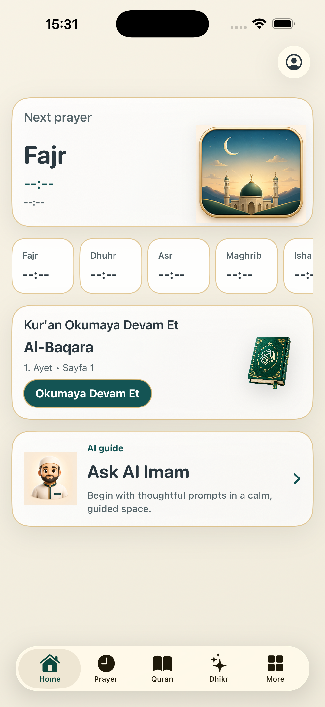

Designed for clarity
Prayer times, Quran progress, and daily tools are presented with a calm visual rhythm, helping users understand what matters now without digging through menus.
Daily worship, beautifully organized
Safa helps you follow prayer times, find the Qibla, continue Quran reading, prepare for Jumuah, reflect with dhikr, and move through the day with focus.

Built for prayer, Quran, remembrance, and everyday Islamic routines.
A separate AI app for dating messages, reply ideas, tone control, and conversation coaching.
Safa is designed to keep daily worship simple, trustworthy, and distraction-free. The experience brings essential Muslim tools together without clutter, so the next meaningful action is always easy to find.
Prayer times, Quran progress, and daily tools are presented with a calm visual rhythm, helping users understand what matters now without digging through menus.
The app avoids noisy ads and unnecessary distractions. Safa focuses on respectful guidance, clean navigation, and practical Islamic utility.
From Fajr reminders to Jumuah preparation, Ramadan flow, Yasin Sharif, Asma ul Husna, and dhikr, Safa supports repeated daily use with a gentle interface.
Download Safa, get support, or review the main product areas.